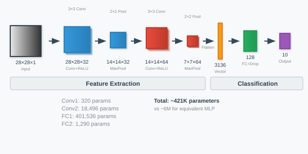
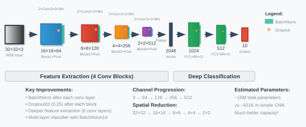

Going deeper — CIFAR, BatchNorm, ResNet
Introduction
Last time we built a basic CNN for MNIST digit classification. MNIST's simplicity let us focus on the core CNN ideas without getting bogged down. Now — do you think the same architecture will fare well on more challenging datasets like CIFAR-10 or CIFAR-100?
Probably not. But for the sake of learning, let's try.
In case you missed it, here's the previous plate where we built the basic CNN for MNIST. The architecture is pretty simple: 2 convolutional blocks with 3×3 filters, ReLU activations, max pooling, a fully-connected layer, and 25% dropout.
Basic CNN for CIFAR-10

For this task we only change the input channels from 1 to 3 (RGB) and adjust the fully-connected layer's input size to match CIFAR-10's spatial dimensions.
Basic CNN architecture for CIFAR-10
- Input channels: 1 → 3 (RGB).
- FC layer input: 3136 → 4096 (CIFAR-10 spatial dimensions).
- Same depth and structure otherwise.
============================================================
CIFAR-10 Basic CNN Results Summary
============================================================
Final Train Accuracy: 85.09%
Final Test Accuracy: 74.75%
Total Parameters: 545,098
Total Epochs: 10
Training Time: 185.73 seconds
Train Loss: 0.4164, Train Acc: 85.09%
Test Loss: 0.8065, Test Acc: 74.75%74.75% on CIFAR-10 is decent, but it's far from usable in practice — and there's a significant overfitting gap of ~10% between train and test.
Improving the CNN architecture
How do we improve this basic CNN for better CIFAR-10 performance? Make it deeper and more complex. We'll build a deeper CNN with more convolutional blocks, batch normalisation, better initialisation, and regularisation techniques like dropout and data augmentation.

Architecture enhancements
- 4 conv blocks (vs 2): progressive depth 3 → 64 → 128 → 256 → 512 channels.
- BatchNormalisation: after every conv layer for stable training.
- Better initialisation: Kaiming for ReLU networks.
What is Kaiming initialization?
One of the problems with deep networks is that gradients can vanish or explode as they propagate through many layers. These are problems during backpropagation in deep feedforward networks or RNNs.
In short:
- Vanishing gradients. Partial derivatives become very small as they propagate backward through layers, leading to slow or stalled training. Most common with sigmoid/tanh activations or very deep networks.
- Exploding gradients. Gradients become very large, causing weight updates to spiral and leading to instability or divergence. Common with RNNs over long sequences, poor weight initialisation, or very deep networks.
Kaiming initialisation (also known as Kaiming He or He-normal initialisation) is a technique for initialising the weights of artificial neural networks. It was introduced in "Delving Deep into Rectifiers: Surpassing Human-Level Performance on ImageNet Classification" by He, Zhang, Ren, and Sun.
It sets the initial weights so the variance of activations remains stable across layers. Specifically: weights are drawn from a Gaussian with mean 0 and standard deviation sqrt(2/n), where n is the number of inputs to the node.
This differs from Xavier initialisation, which uses a uniform distribution and is more suitable for tanh or sigmoid activations.
Regularisation techniques
- Data augmentation — random crops, flips, colour jitter.
- Dropout2d — 25% in conv blocks, 50% in the classifier.
- Weight decay — L2 regularisation in the optimiser.
- LR scheduling — step decay every 5 epochs.
This is a well-structured, solid CNN — reminiscent of VGG-style networks but enhanced with BatchNorm after every conv layer, careful weight initialisation, and a progressive channel-depth increase. Modular, reasonable depth for testing, Kaiming initialisation for ReLU. It should do much better on CIFAR-10.
============================================================
CIFAR-10 Deeper CNN Results Summary
============================================================
Final Train Accuracy: 83.24%
Final Test Accuracy: 86.45%
Best Test Accuracy: 86.45%
Total Parameters: 7,320,394
Training Time: 457.63 seconds
Overfitting Gap: -3.21%============================================================
COMPARISON: Basic CNN vs Deeper CNN
============================================================
Basic CNN Test Accuracy: 74.75%
Deeper CNN Test Accuracy: 86.45%
Improvement: +11.70%
Basic CNN Parameters: 545,098
Deeper CNN Parameters: 7,320,394
Parameter Increase: 13.4×Excellent results. 86.45% on CIFAR-10 is solid, with only a 3.21% overfitting gap and an overall 11.7% improvement.
BatchNorm with data augmentation really helped — the model is well regularised. For 15 epochs it took ~457 seconds (~30s per epoch), which is reasonable given the 7.3M parameters.
Will the deeper CNN still work without these techniques?
For this problem? Performance will degrade.
- Without BatchNorm — the model may struggle with internal covariate shift.
- Without Kaiming initialisation — weights may be too spread out, leading to poor convergence.
- Without dropout — the model will likely overfit on CIFAR-10, especially with 7M+ parameters.
- Without data augmentation — the model is limited in data diversity.
- There may even be vanishing-gradient issues, though those are more prominent with sigmoid/tanh activations.
In short: worse validation accuracy, a massive train–test gap, internal covariate shift, early divergence.
Pushing the deeper CNN further
When working with practical image-classification models, CIFAR-10 and CIFAR-100 are the go-to benchmarks for many papers and architectures.
CIFAR-10 tests "Can your model learn?"
CIFAR-100 tests "Can your model scale?"
The two form a natural difficulty ladder in terms of model capacity vs. task complexity.
Let's scale our Deeper CNN to CIFAR-100, which has 100 classes with 600 images each. Same architecture, but the final fully-connected layer outputs 100 classes instead of 10.
============================================================
CIFAR-100 Deeper CNN Results Summary
============================================================
Final Train Accuracy: 46.62%
Final Test Accuracy: 53.57%
Best Test Accuracy: 53.57%
Total Parameters: 7,366,564
Total Epochs: 20
Training Time: 600.31 secondsTough. The model is struggling: 53.57% on CIFAR-100 is far from usable, and it's clearly underfitting. Sometimes underfitting just means the model hasn't had enough epochs yet.
============================================================
CIFAR-100 Deeper CNN Results Summary
============================================================
Final Train Accuracy: 51.25%
Final Test Accuracy: 57.29%
Best Test Accuracy: 57.29%
Total Parameters: 7,366,564
Total Epochs: 35
Training Time: 1093.35 secondsGoing from 20 → 35 epochs gave only ~4% gain. Not worth pushing epochs at this point.
So what's the problem?
- Training difficulty scaling. As task complexity increases, models need to learn finer class boundaries and handle more intra-class variance. We've hit a bottleneck — not in the architecture, but in its capacity to learn complex features.
- Diminishing returns from depth. Adding depth past a certain point doesn't yield better performance, unless the architecture supports it (e.g. residual connections). An even deeper network won't help much.
Deeper networks help only as far as they can be optimised and generalised. When task difficulty scales up and you don't adjust other factors (width, augmentation, learning rate, architecture), depth alone gives diminishing returns.
To go further, we'll need more than just depth. We'll need a better architecture.
Modern CNN architectures
As of 2025, CNNs are still widely used, but their dominance has been overtaken in many areas — especially vision tasks — by Vision Transformers (ViTs) and hybrid models. That said, CNNs remain efficient and preferred for many real-time and resource-constrained tasks.
- CNNs (EfficientNet, ConvNeXt) — still faster and lighter than ViTs for many edge / real-time tasks.
- ViTs (Swin Transformer, DeiT, SAM backbones) — state of the art in accuracy for vision benchmarks but need more compute. More popular in research and large-scale industry models.
- Hybrid architectures (CoaT, LeViT) — combine CNNs + attention. Best of both worlds in some tasks.
The CNN landscape is still vast. See PyTorch models and pre-trained weights or Keras applications. For ViTs and hybrids, see Hugging Face's Vision Transformers.
For this plate, we'll focus on one architecture in particular — ResNet.
Residual Network (ResNet)
One common problem with deep CNNs when you add more layers is the vanishing / exploding gradient problem. It's hard to train very deep networks because gradients can become too small or too large, leading to poor convergence (or outright divergence), which also leads to high training and test loss.
In 2015, researchers at Microsoft Research introduced a new architecture: Residual Network, or ResNet.
ResNet is all about minimising the vanishing/exploding gradient problem by introducing a core idea — skip connections (or residual connections) — that let gradients flow more easily through the network. Instead of learning a direct mapping H(x), ResNet learns the residual mapping F(x) = H(x) − x, where x is the input.
What is a residual, or residual block?
At its core, a residual block computes:
\[ \text{output} = F(x) + x \]
Where:
xis the original input to the block.F(x)is the output of a small neural network (usually a few conv + BN + ReLU layers).
x is added back in via an identity (skip) connection. This skip path bypasses the main transformation. So the residual block learns the difference between input and output (the residual), which is easier than trying to learn the output directly.
\[ F(x) = H(x) - x \implies H(x) = F(x) + x \]
This is important in very deep networks, where layers may not need to transform the data significantly — identity mappings might already be sufficient in parts of the network. Giving the model a shortcut path gives it the flexibility to leave the data untouched (F(x)=0) or apply a transformation (F(x)≠0) as needed.
Traditional layers try to mutate data every step, even when it doesn't help. Residual blocks can let data pass through unmodified when needed, and only nudge it when helpful. This avoids degradation in performance as models go deeper.
There are several variations of ResNet with different depths. We'll choose 18 layers since this plate is about the underlying concept — so, ResNet-18.
Key ResNet-18 features
- Skip connections:
out += self.shortcut(x)— the core innovation. - 18 layers: 2+2+2+2 BasicBlocks + initial conv + final FC.
- Efficient: ~11M parameters vs 7.3M for the custom deeper CNN.
- SGD + momentum: better for ResNet training than Adam.
There are two ways to get ResNet-18: build it from scratch or use a pre-trained model. To use pre-trained, invoke a single function:
from torchvision.models import resnet18, ResNet18_Weights
# Load model with pretrained weights
weights = ResNet18_Weights.DEFAULT
model = resnet18(weights=weights)Be careful with the pretrained version — those weights are for ImageNet, a 224×224 high-resolution natural-image dataset, completely different from CIFAR's 32×32 low-resolution images. You'll likely want to modify the first conv layer and use smaller learning rates if you go that route. Building from scratch is demonstrated in my notebook.
ResNet-18 on CIFAR-10
============================================================
ResNet-18 on CIFAR10 Results Summary
============================================================
Final Train Accuracy: 91.77%
Final Test Accuracy: 88.75%
Best Test Accuracy: 88.84%
Total Parameters: 11,173,962
Total Epochs: 15
Training Time: 545.73 seconds
Overfitting Gap: 3.02%============================================================
COMPARISON: Previous CNN vs ResNet-18 on CIFAR10
============================================================
Deeper CNN Test Accuracy: 86.45%
ResNet-18 Test Accuracy: 88.84%
Improvement: +2.39%
Deeper CNN Parameters: 7,320,394
ResNet-18 Parameters: 11,173,962
Parameter Efficiency: 1.53×ResNet-18 on CIFAR-100
============================================================
ResNet-18 on CIFAR100 Results Summary
============================================================
Final Train Accuracy: 84.64%
Final Test Accuracy: 71.53%
Best Test Accuracy: 71.75%
Total Parameters: 11,220,132
Total Epochs: 25
Training Time: 893.19 seconds
Overfitting Gap: 13.11%============================================================
COMPARISON: Previous CNN vs ResNet-18 on CIFAR100
============================================================
Deeper CNN Test Accuracy: 53.57%
ResNet-18 Test Accuracy: 71.75%
Improvement: +18.18%
Deeper CNN Parameters: 7,366,564
ResNet-18 Parameters: 11,220,132
Parameter Efficiency: 1.53×Some good insights:
- Both models perform well on the simpler 10-class problem, with only a 2.39% increase from skip connections. We can't really tell whether skip connections provided the benefit or just better weight flow.
- For the 100-class problem, ResNet-18 outperforms the previous Deeper CNN by 18.18%. We already saw that the previous Deeper CNN couldn't handle the complex gradient flow. ResNet, with 1.53× more parameters, used its identity mappings to deliver a substantially better result — and would likely improve further with more epochs.
Conclusion
For learning and exploring, the simplest CNNs give you a glimpse of how convolutional neural networks work and where they shine in image classification. But as imagery gets more complex (or larger), those basic models struggle. Deeper CNNs with BatchNorm, Kaiming initialisation, and regularisation get us further. And ResNet — with its skip-connection innovation — gives us a way to scale depth without sliding into the vanishing-gradient pit.
In the next part of this Deep CNNs series, we'll explore other modern CNNs and where they earn their keep.
References
- He, K., Zhang, X., Ren, S., & Sun, J. (2015). Deep Residual Learning for Image Recognition. arXiv:1512.03385v1. arxiv.org/pdf/1512.03385
- PyTorch. torchvision.models.resnet18
- GeeksforGeeks (2025). Kaiming Initialization in Deep Learning.
- GeeksforGeeks (2025). Residual Networks (ResNet) — Deep Learning.
- GeeksforGeeks (2025). ResNet-18 from scratch using PyTorch.